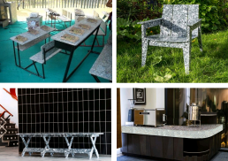
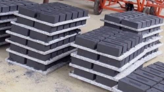

APPLICATION
CONSTRUCTION SITE
- Eco-Friendly Plastic Boards are very popular in construction form works/shuttering and are a direct substitute for wooden plywood. They are widely used in modern building projects, especially those requiring heavy-duty repeated cement shuttering works. These Eco-Friendly Boards have no drawbacks as they are waterproof, decay-proof, and have no adverse effects from nailing, hammering, vibrating, concreting, etc. They have high resistance to moisture and corrosion and are easy to clean.

RESIDENTIAL & COMMERCIAL USE
- Eco-Friendly Plastic Boards can be used in furniture at very affordable rates, such as cabins, benches, beds, partitions, school benches, kitchen cabinets, counter tops, hospital beds, ward furniture, stands, bedside tables, office furniture, etc., using boards of different sizes and thicknesses.

FLY-ASH BRICK PALLETS
- Eco-Friendly Plastic Boards are best for pallets of paver blocks, AAC blocks, fly-ash bricks, as they have high strength, smooth surface, fillet corner, 100% waterproof, long-lasting, and affordable. These can be achieved by using different sizes and thicknesses for different uses.
DOORS
- Eco-Friendly Plastic Boards are a good substitute for wooden and hollow doors, as they are strong, durable, termite-proof, and have very high screw holding capacity. They are available in varying sizes and are also customizable as per